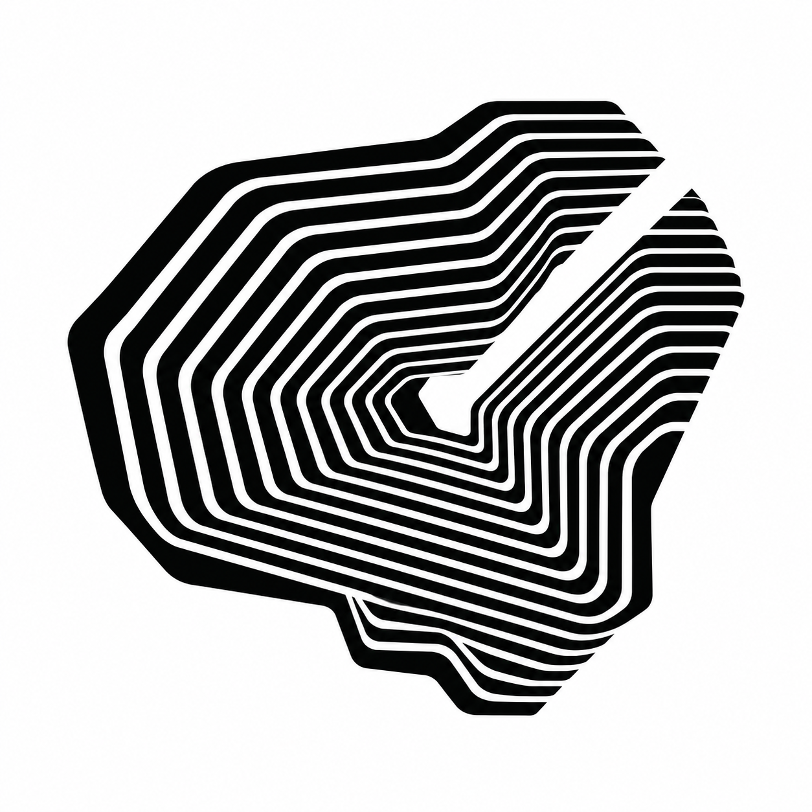

AIncision
CONTOUR / SCULPTURAL
A deliberate cut through a continuous field. The closest relative to Morph, with a more irregular outline and an open seam that gives the eye a feature to remember.
Next refinement: fewer, wider-spaced contours for the smallest avatar; preserve the incision and stepped shoulder.
Open full sketch ↗